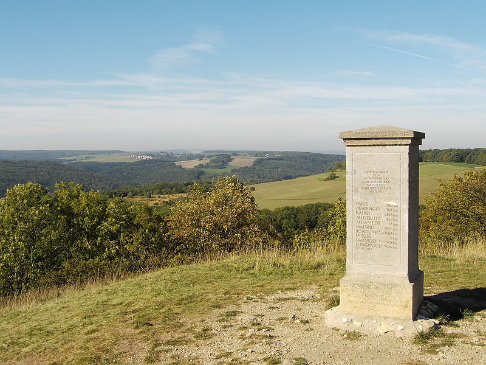
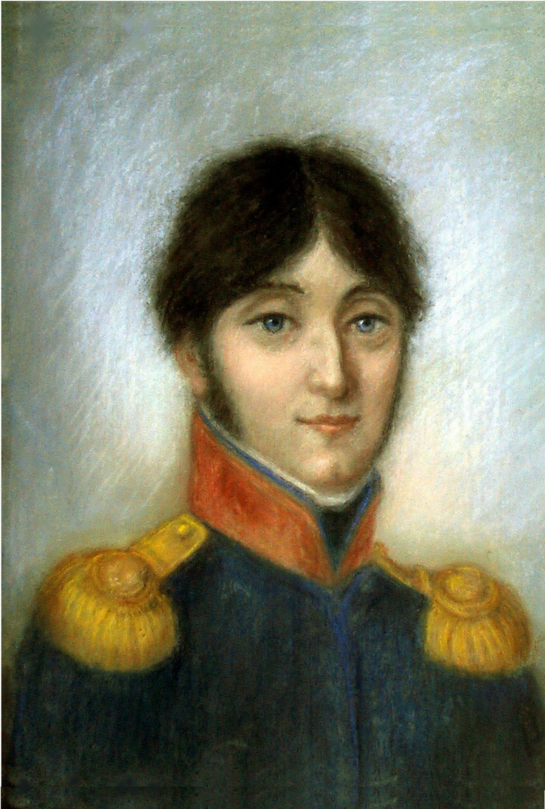
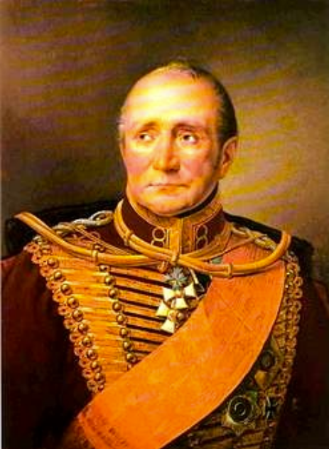
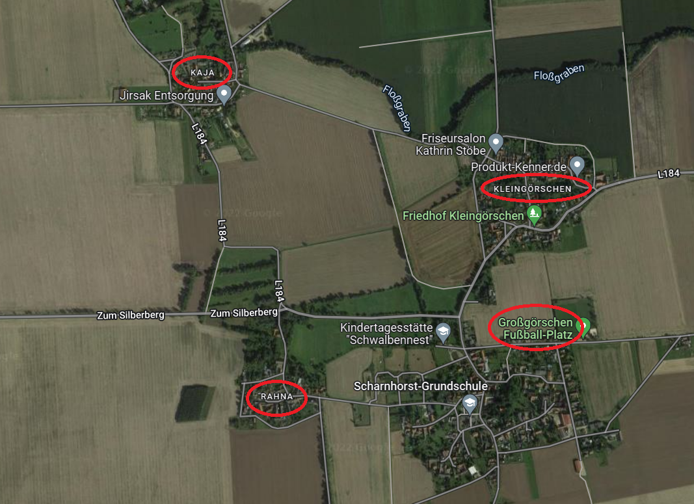

뤼첸 전투 (3) - 불안한 시작, 소극적인 전개
게시: 2022-09-19T06:30:55+09:00
원래 비트겐슈타인의 기본적인 작전은 나폴레옹의 주력부대가 뤼첸을 지나 라이프치히 쪽으로 충분히 지나가도록 내버려두었다가, 프랑스군 우익의 뒤통수를 후려갈긴다는 것이었습니다. 그러자면 당연히 프랑스군 주력부대가 저 멀리 지나간 뒤에 공격을 개시해야 했습니다. 그리고 비교적 탁 트인 평야지대인 라이프치히 일대에서 정찰을 해보니, 저 멀리 프랑스군 주력이 먼지구름을 일으키며 행군해가는 것이 분명히 보였습니다. 기병대들이 잡아온 프랑스군 포로들을 취조해보아도, 5월 2일 아침에 나폴레옹의 사령부도 뤼첸을 떠나 라이프치히로 출발한 것이 분명했습니다. 그리고 저 지도에도 나오지 않는 작은 4개 마을에 주둔한 프랑스군은 군기 빠진 후위부대 2천여명임을 참모 뮐링 대령 본인이 직접 정찰을 해보고 확인했습니다. 그러니 오전 11시, 그 곳을 공격하면 되는 것이었습니다. 그런데 아무리 탁 트힌 평원이라고 해도 야트막한 굴곡은 언제나 있기 마련이었고 농가와 움푹 꺼진 길, 울타리와 숲 등이 약간씩 시야를 가렸습니다. 그리고 기마 정찰이라는 것은 아무리 경험 많은 사람이라고 해도 정확한 정보를 잡아내기 어려운 것이었습니다. 1806년 예나 전투 때만 하더라도, 나폴레옹은 당장 눈 앞의 호헨로헤 휘하의 프로이센군 4만5천 정도가 프로이센군의 주력부대 전체 12만이라고 확신을 가지고 전투를 벌였습니다. 그때 나폴레옹은 란드그라펜베르크 (Landgrafenberg) 언덕 위에서 전날 밤부터 직접 망원경으로 적진을 살펴보고도 그런 착각을 했습니다. 평생을 전장에서 보낸 나폴레옹조차도 그렇게 완벽한 환경에서 그런 실수를 저지를 수 있는 것이 정찰입니다. 그런데 지난 6년 간 사실상 전쟁이라고는 구경도 못해본 프로이센군 장교들은 어땠겠습니까?

(예나(Jena) 인근인 란드그라펜베르크 고지에 세워진 나폴레온슈타인 (Napoleonstein, 나폴레옹 석이라는 뜻)입니다. 아래 훤히 내려다 보이는 이 명당자리에서 나폴레옹은 프로이센군의 진영을 망원경으로 면밀히 살펴본 뒤 자신의 눈 앞에 펼쳐진 것이 프로이센의 주력부대라고 확신했습니다. 그러나 실제로는 그 진영은 호헨로헤 장군의 4만5천에 불과했으며, 본대 6만5천은 바로 다음날 다부의 외로운 군단과 혈투를 벌였습니다. 나폴레옹 같은 명장도 그런 실수를 저지를 수 있는 것이 바로 정찰입니다.) 눈 앞의 4개 마을에는 어리버리한 프랑스군 잡졸들 2천명이 고립되어 있을 뿐이라는 잘못된 정보를 가지고 1개 여단으로 돌격한 블뤼허가 무려 1개 사단 1만2천의 반격을 받고 당황한 것은 시작에 불과했습니다. 원래 계획에 따라 블뤼허가 마을 남쪽을 습격하는 사이 그 마을들의 서쪽을 빙 돌아 포위하려 했던 빌헬름 왕자의 기병대는 텅 비어 있는 줄 알았던 서쪽 마을 스타지들에도 1개 사단의 프랑스군이 있는 것을 알고 대경실색했습니다. 알고 보니 프랑스군의 주력은 아직 이 일대에 남아 있었던 것이고, 프로이센군의 정찰 보고가 크게 잘못된 것이었습니다. 실제로 나폴레옹은 그날 아침 일찍 제3 군단의 지휘관 네 원수와 함께 뤼첸에서 출발하기는 했지만, 그들과 함께 선두에 선 것은 제3 군단이 아니라 나폴레옹의 근위대 1만5천에 불과했습니다. 4만5천에 달하는 제3 군단 산하 5개 사단 중 3개 사단은 아직 뤼첸 일대에 남아있었고, 나머지 2개 사단인 수암 사단이 그로스괴르쉔 등 4개 마을에, 그리고 지라르(Jean-Baptiste Girard) 사단이 바로 그 서쪽인 스타지들에 주둔하고 있었습니다. 그리고 서투른 정찰 솜씨 덕분에 비트겐슈타인은 나폴레옹의 뒤통수를 제대로 가격했다고 생각했지만 실은 어깨죽지 정도를 얻어 맞은 셈이었습니다.

(지라르(Jean-Baptiste Girard)입니다. 나폴레옹보다 6살 연하인 그는 프랑스 혁명이 발발하자 19세의 나이로 혁명군에 자원했고, 3년 후 대위까지 승진했습니다. 나폴레옹의 이탈리아 원정에도 참전했고 마렝고 전투에도 참전했습니다만 승진은 빠르지 않아 1806년 예나 전투 이후에나 준장으로 승진했습니다. 그는 1813년 라이프치히 전투 직전에 벌어진 하겔베르크(Hagelberg) 전투에서 패배하고 포로가 된 채 나폴레옹의 퇴위를 지켜봐야 했습니다. 백일천하 때 그는 나폴레옹의 부름에 응했고 워털루 전투 직전의 리니(Ligny) 전투에서 치명상을 입었는데, 나폴레옹은 세인트 헬레나로 귀양가기 직전에 그를 백작으로 봉해줍니다. 그러나 불과 6일 뒤 자라르는 리니에서 입은 부상이 악화되어 사망했고, 부르봉 왕가는 그의 작위를 인정하지 않았습니다.) 하지만 스타지들 마을에서 지라르 사단과 대치하며 포격전을 벌이기 시작한 빌헬름 왕자는 상황이 나쁘지 않다고 판단했습니다. 지라르 사단에 배속된 포병대의 말들이 마침 물을 마시러 인근 개울에 나간 사이에 교전이 벌어지는 바람에, 지라르 사단의 초기 대응 포격이 그다지 시원찮았는데, 그에 비해 제대로 준비된 포병대를 끌고 다니던 빌헬름 왕자의 기병대는 시원시원하게 포탄을 날려보낼 수 있었기 때문이었습니다. 그래서 빌헬름 왕자는 비트겐슈타인에게 전령을 보내 '보병 사단을 보내달라, 이 참에 스타지들 마을까지 점령해버리자'라고 요청했습니다. 하지만 일이 이렇게 되자 기습을 당한 수암과 지라르 등 프랑스군 사단장들도 당황했지만 비트겐슈타인도 그에 못지 않게 당황할 수 밖에 없었습니다. 이 일대에서 예상보다 너무 많은 프랑스군이 발견되자 자신의 기습이 영 잘못 시작되었다는 것을 비로소 깨달았기 때문이었습니다. 이렇게 된 바에야 철없는 빌헬름 왕자의 요청대로 스타지들 마을로 지원 병력을 보내고, 블뤼허가 공격하던 4개 마을에도 추가 병력을 투입하여 본격적인 전투를 벌여보자는 의견도 있었으나, 비트겐슈타인은 급격히 위축되었습니다. 당장 저 마을들 너머에 프랑스군이 얼마나 더 있는지 알 수도 없었고, 꾸역꾸역 라이프치히로 몰려가고 있는 프랑스군이 이 맹렬한 포격 소리를 듣고 이쪽으로 모여들 것이 분명한 상황에서 전체 병력을 투입하는 것은 위험하다는 생각이 들었기 때문입니다. 게다가 전체 프랑스군과 당장 대결을 벌어기에는 그의 병력은 아직 부족했습니다. 오후 3시 경 현장에 도착할 토르마소프의 부대가 도착해야만 어느 정도 균형을 맞출 수가 있었는데, 그때까지는 확전을 해서는 안된다는 것이 그의 판단이었습니다. 그래서 그는 스타지들 마을로의 전선 확대를 거부하고 일단 블뤼허가 4개 마을에서 벌이고 있는 전투 상황을 지켜본다는 매우 소극적인 결정을 내렸습니다. 비트겐슈타인의 현장 지휘가 바로 본인이 세웠던 과감한 작전안과는 달리 매우 소극적이라는 것은 분명히 비난받을 만한 일이었습니다. 그러나 삶과 죽음, 승리와 패배가 쉴 새 없이 교차하는 실전 상황에서 과감한 결정을 내린다는 것은 매우 어려운 일이긴 했습니다. 실제로 이 날 비트겐슈타인 뿐만 아니라 연합군의 거의 모든 지휘관들은 소극적인 지휘로 일관했습니다. 가령 '이렇게 된 바에야 스타지들까지 점령합시다'라는 남자다운 요청을 비트겐슈타인에게 보내 무척 적극적인 지휘를 한 것처럼 보이는 빌헬름 왕자도 실은 매우 소극적인 지휘를 한 셈이었습니다. 그가 맞닥뜨린 지라르 사단도 생각하지 못한 연합군의 기습에 매우 당황한 판국이었으므로, 그들이 제대로 방어선을 구축하기 전에 3천이 넘는 기병대가 바람처럼 돌격하여 들어갔다면, 어쩌면 사단 전체를 패주시킬 수도 있었습니다. 그러나 빌헬름이 택한 전술은 마을을 향해 대포를 쏘며 본진에 지원군을 요청한 것 뿐이었습니다. 애초에 수적으로 불리한 연합군에게 그래도 승산이 있다고 생각했던 것은 기병 전력이 압도적으로 우세했기 때문이었는데, 그 우세한 기병들은 자신들의 장점을 완전히 깔아뭉갠 채 대포 뒤에 숨어서 비비적거리고 있을 뿐이었습니다. 용기라면 네나 뮈라 못지 않다고 자부하던 블뤼허 본인이 직접 지휘한 4개 마을에서의 전투도 크게 다르지 않았습니다. 기습에 당황하는 적을 공격하는 가장 좋은 방법은 총검을 꼬나쥐고 돌격하는 것이었습니다. 그런데 전투 초기에 당황한 기색이 역력한 프랑스군이 마을 밖에 주욱 늘어서 방어선을 짜려하자, 블뤼허조차 돌격 대신 먼저 포병대를 앞세워 1시간 동안이나 대포알을 날리며 간을 보았습니다. 덕분에 4개 마을을 점거하고 있던 수암 사단은 방어 태세를 충분히 갖출 수 있었습니다. 오히려 과감한 공격 정신을 보여준 것은 역시 프랑스군이었습니다. 공세 위주의 교리를 가지고 있던 프랑스군의 전통은 모조리 신병으로 이루어진 수암 사단에서도 제대로 발휘되었습니다. 이들은 클뤽스의 프로이센군이 그로스괴르쉔 마을에서 더 전진하지 못하고 웅크리는 모습을 보이자 수적 우위를 앞세워 반격에 나서 그로스괴르쉔 마을을 탈환하려 애썼습니다.

(지텐(Hans Ernst Karl, Graf von Zieten) 장군입니다. 브란덴부르크, 즉 오리지널 진짜 프로이센 출신의 귀족인 그는 나폴레옹보다 1살 연하였습니다. 그는 나중에 백일천하 때의 전투인 리니(Ligny) 전투와 워털루 전투에도 참전했고, 그의 군단은 연합군 중 가장 먼저 파리에 입성하는 영광을 누렸습니다. 이후 백작, 즉 그라프(Graf)에 봉해진 그는 78세까지 장수했습니다.) 이런 상황에서 비로소 정신을 차린 블뤼허는 비트겐슈타인이 뭐라고 하건 상관하지 않고 자신의 휘하인 지텐(Hans Ernst Karl, Graf von Zieten) 장군의 제2 여단을 추가 투입하여 4개 마을 중 북동쪽 마을이자 수암 사단의 왼쪽 측면인 클라인괴르쉔 마을을 공격했습니다. 수암 사단은 이 공격에도 대비하고 있었고 치열한 백병전이 벌어졌습니다. 그러나 남동쪽의 그로스괴르쉔과 북동쪽 클라인괴르쉔 양쪽 측면에서 싸워야 했던 수암 사단은 결국 버티지 못하고 물러섰고, 이들은 남서쪽의 라나 마을로 물러섰는데, 기세가 오른 프로이센군은 후퇴하는 이들을 맹렬히 추격하여 라나 마을까지도 점령해버렸습니다.

(여기서 다시 한번 4개 마을의 위치를 확인하시는 것이 전황 파악에 도움이 되실 것입니다. 북서쪽의 카야 빼고는 프로이센군에게 다 털린 상황이 되었다는 것이지요.) 결국 수암 사단은 4개 마을 중 3개 마을을 상실하고 마지막 남은 북서쪽 카야 마을에 집결했습니다. 여기서까지 밀려나면 이들은 벌판으로 내쫓기는 셈이었는데, 그럴 경우 패주하는 프랑스 보병 사단을 프로이센군의 수많은 기병대가 그 뒤를 추격하며 칼탕을 먹이려고 호시탐탐 준비하고 있었습니다. 수암 사단은 그야말로 풍전등화의 운명이었습니다. Source : The Life of Napoleon Bonaparte, by William Milligan Sloane Napoleon and the Struggle for Germany, by Leggiere, Michael V
https://en.wikipedia.org/wiki/Jean-Baptiste_Girard_(soldier) https://en.wikipedia.org/wiki/Hans_Ernst_Karl,_Graf_von_Zieten